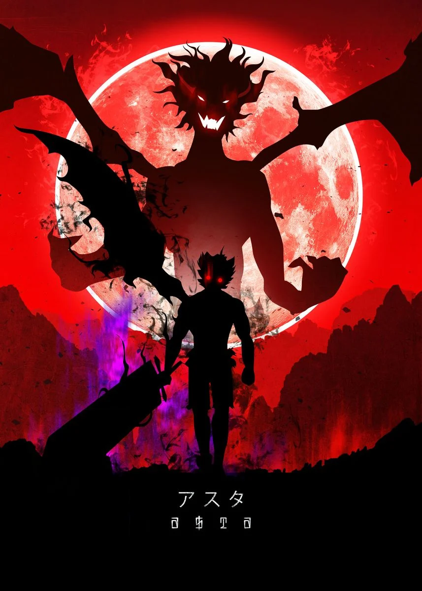
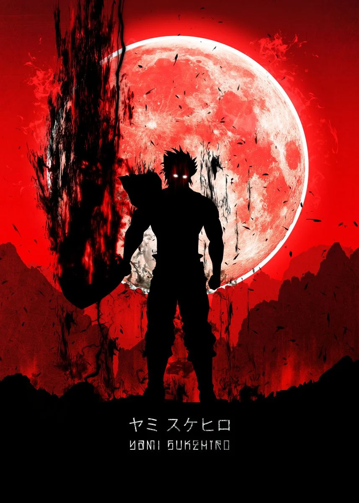

hey guys this is your boy kalaiselvan Hobbies:I love gaming,I used to play games for a day long nonstop now I am concentrated on my life so I restrict myself for an hour daily Dreams:I want to be finacially independent regardless of the carrear path if u guys want me to pick one then ill say datascientist Things I want to Learn:from my childhood I wanted to master martial arts(anykind) and when it come to a academics I want to learn about data
Sathyabama Institute of Science and Technology, formerly known as Sathyabama University, is a deemed-to-be university, located in Chennai. Sathyabama University admission 2023 is now open for UG and PG courses. Additionally, the university is inviting applications for Sathyabama All India Engineering Entrance Examination (SAEEE) 2023 for admission to B.E / B.Tech / B.Arch / B.Des programs.The last date to apply for SAEEE 2023 is March 31, 2023. Candidates seeking admission at Sathyabama University can apply online on the university’s official website - sathyabama.ac.in.Sathyabama Institute of Science and Technology, Chennai is a Christian Minority Institution established in 1987. It is a deemed-to-be University accredited with Grade ‘A’ by National Assessment and Accreditation Council (NAAC). Sathyabama Institute of Science and Technology offers various Undergraduate, Postgraduate and Doctoral Programs in the field of Engineering, Architecture, Dental, Arts, Commerce, and Science. Admission to these courses is done on the basis of the national level exams conducted all over the country. Sathyabama Institute of Science and Technology has begun registrations for B.E / B.Tech / B.Arch. / B.Des programs 2023-24 for admission through the institute-level entrance test, Sathyabama All-India Entrance Exam (SAEEE) 2023. Sathyabama Institute of Science & Technology recently concluded the placement drive for its 2020-22 batch with a placement percentage of 92.14%. Students recieved 2004 placement offers from 363 participating recruiters. Major recruiters included Cognizant, Cisco, Wipro, Capgemini, HCL, Bank of America, IBM, ICICI Bank, EY, Silicon Labs etc. The highest salary package received was INR 31 LPA & the average salary stood at INR 4.75 LPA.
Black Clover (Japanese: ブラッククローバー, Hepburn: Burakku Kurōbā) is a Japanese manga series written and illustrated by Yūki Tabata. It has been serialized in Shueisha's shōnen manga magazine Weekly Shōnen Jump since February 2015, with its chapters collected in 33 tankōbon volumes as of November 2022. The story follows Asta, a young boy born without any magic power. This is unknown to the world he lives in because seemingly everyone has some sort of magic power. With his fellow mages from the Black Bulls, Asta plans to become the next Wizard King. The manga was first adapted into an original video animation produced by Xebec Zwei, released in 2017. An anime television series adaptation produced by Pierrot aired in Japan on TV Tokyo from October 2017 to March 2021. An anime film, titled Black Clover: Sword of the Wizard King, is set to premiere in Japanese theaters and on Netflix in March 2023. In North America, the manga is licensed for English release by Viz Media, while the anime series is licensed by Crunchyroll. Plot:The series focuses on Asta, a young orphan who is left to be raised in an orphanage alongside his fellow orphan, Yuno. While everyone is born with the ability to utilize mana in the form of magical power, Asta, with no magic instead focuses on physical strength. Conversely, Yuno was born as a prodigy with immense magical power and the talent to control wind magic. Motivated by a desire to become the next Wizard King, an authority figure second to the king of Clover Kingdom, the two youths developed a friendly rivalry. Yuno obtains a legendary four-leaf grimoire held by the kingdom's first Wizard King. The four-leaf grimoire is a rare grimoire, only given to the most immense mages. Asta, despite his lack of magic, obtained a mysterious five-leaf grimoire that contains mysterious elf swords and a bodiless member of the Devil race who utilizes rare anti-magic. Afterward, he and Yuno each join a Magic Knight squad as the first step to fulfill their ambitions. Asta joins the Black Bulls under Yami Sukehiro alongside Noelle Silva while Yuno becomes a member of the Golden Dawn. They embark on various adventures while contending with an extremist group called the Eye of the Midnight Sun, whose leadership is manipulated by a Devil in avenging an injustice committed against the Elves by the Clover Kingdom at the time of its founding. The Magic Knights then face the Dark Triad of the Spade Kingdom, with Asta and Yuno learning of their Devils’ influence on their lives and of the Dark Triad’s plan to fully manifest the Devils into their world.
 